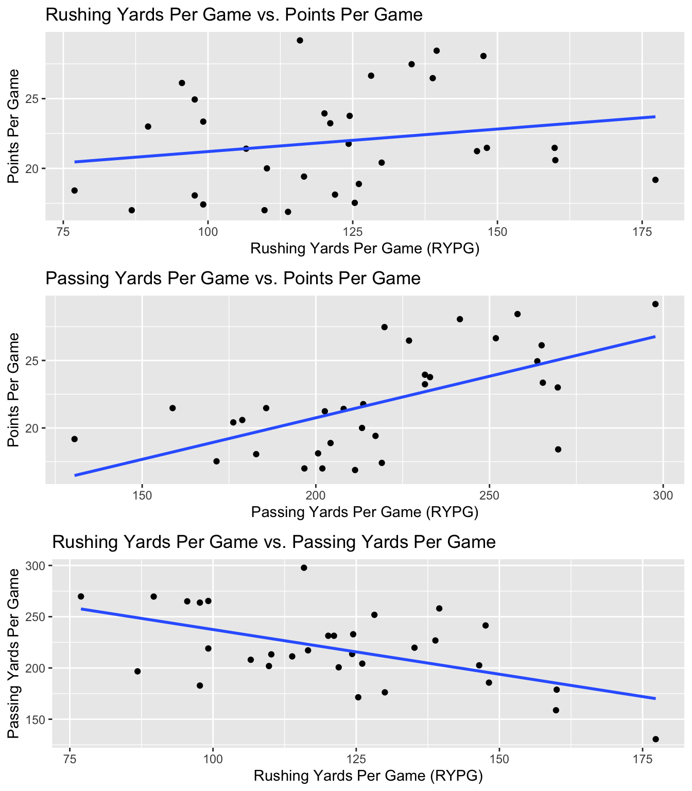
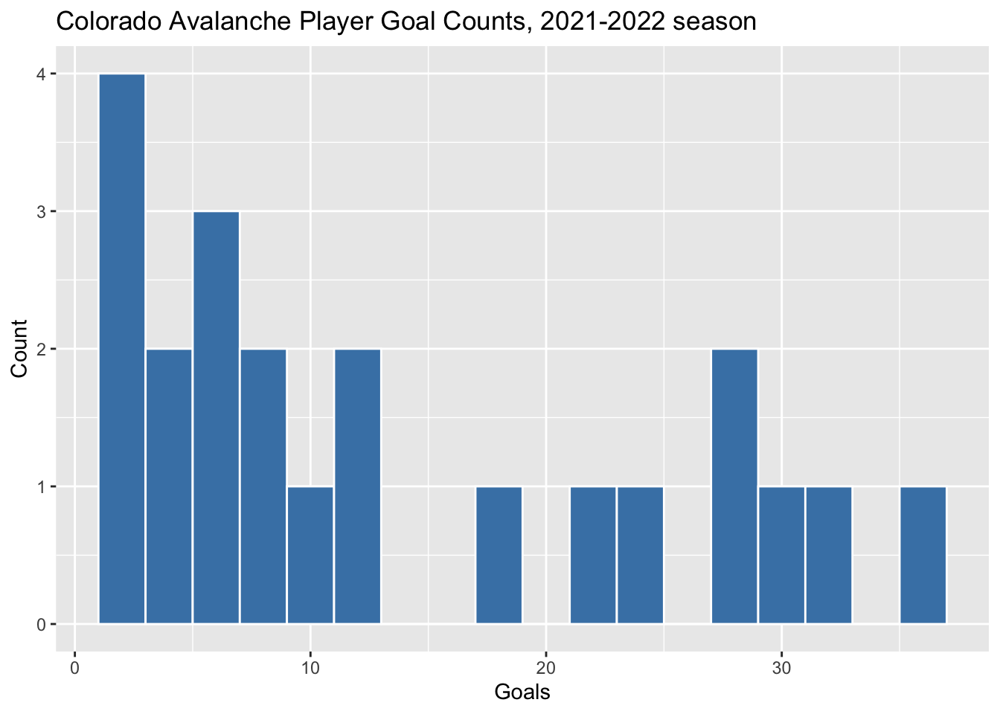
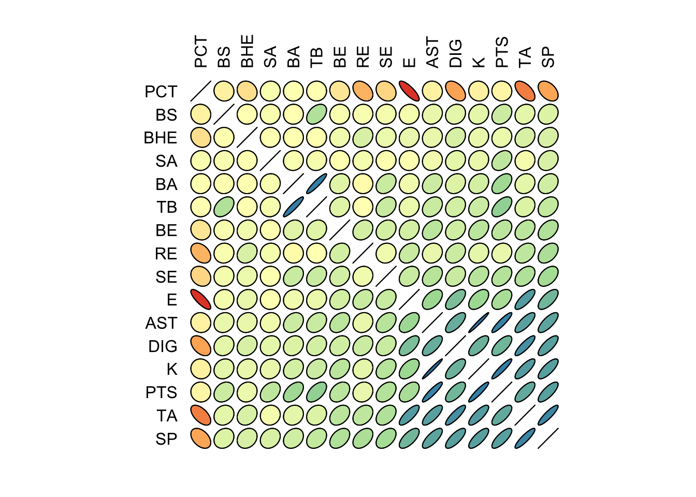
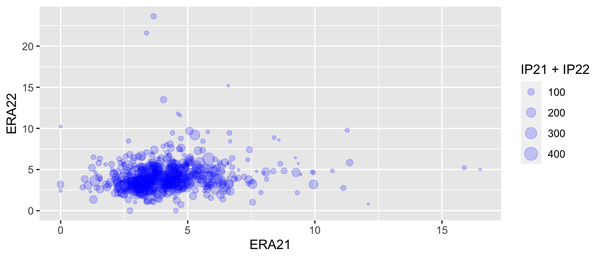
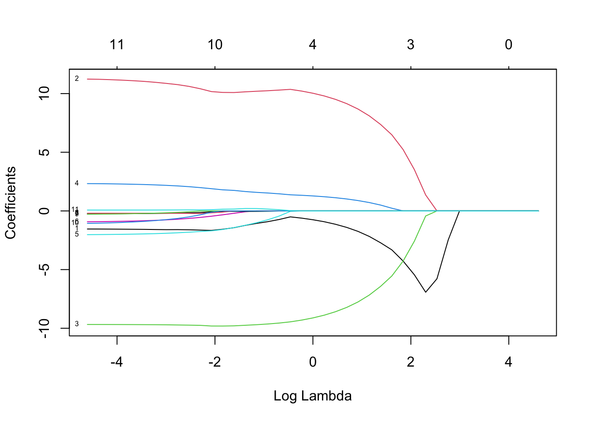

Chapter 8 Linear Regression
Linear regression is a statistical method for modeling a quantitative variable as a function of one or more quantitative variables. This method determines a “line of best fit” by minimizing the sum of squared errors.
Definition 8.1 A simple linear regression model, \(\hat{y} = \hat{\beta}_0 + \hat{\beta}_1 x\), between a dependent variable \(y\) and an independent variable \(x\) is found by minimizing \(SSE=\sum(y_i-\hat{\beta}_0-\hat{\beta}_1x)^2\), where:
\(\hat{\beta}_0 = \bar{y} - \hat{\beta}_1 \bar{x}\) \(\hat{\beta}_1 = \frac{\sum(x_i-\bar{x})(y_i-\bar{y})}{\sum(x_i-\bar{x})^2}\)
Definition 8.2 A multiple linear regression model, \(\hat{y} = \hat{\beta}_0 + \hat{\beta}_1 x_1 + \ldots \hat{\beta}_p x_p\), between a dependent variable \(y\) and an independent variables \(x_1, x_2, \ldots, x_p\) is found by minimizing \(SSE=\sum(y_i-\hat{\beta}_0-\hat{\beta}_1x_1-\hat{\beta}_2x_2- \ldots - -\hat{\beta}_px_p)^2\)
We make a few assumptions when we fit these regression models:
- The response variable can be modeled as a linear combination of the predictor variables (linearity in the parameters).
- The errors are independent normal random variables.
- We seek to minimize the sum of squared errors, SSE.
8.1 Simple Linear Regression
Example 8.1 Download individual MLB pitching statistics for the 2021 and 2022 seasons. Use these datasets to build simple linear regression models with 2022 season ERA as the dependent variable and 2021 season ERA and FIP as the independent variables.
# Download individual pitching data for 2021 and 2022 seasons
library(tidyverse)
library(baseballr)
pit21 <- bref_daily_pitcher("2021-01-01", "2021-12-31") %>%
fip_plus() %>%
dplyr::select(Name, IP, ERA, FIP) %>%
dplyr::arrange(dplyr::desc(IP)) %>%
mutate(IP21=IP,ERA21=ERA,FIP21=FIP)
pit22 <- bref_daily_pitcher("2022-01-01", "2022-12-31") %>%
fip_plus() %>%
dplyr::select(Name, IP, ERA, FIP) %>%
dplyr::arrange(dplyr::desc(IP)) %>%
mutate(IP22=IP,ERA22=ERA,FIP22=FIP)
# merge the datasets together, remove redundant columns
all_pit <- pit21 %>%
left_join(pit22,by = "Name") %>%
select(-c(2:4,8:10)) %>%
filter(IP21>5 & IP22 > 5)
all_pit %>% slice(1:10) %>% kable(booktabs=T)| Name | IP21 | ERA21 | FIP21 | IP22 | ERA22 | FIP22 |
|---|---|---|---|---|---|---|
| Zack Wheeler | 213.1 | 2.78 | 2.57 | 153.0 | 2.82 | 2.87 |
| Walker Buehler | 207.2 | 2.47 | 3.13 | 65.0 | 4.02 | 3.80 |
| Adam Wainwright | 206.1 | 3.05 | 3.62 | 191.2 | 3.71 | 3.65 |
| Sandy Alcantara | 205.2 | 3.19 | 3.39 | 228.2 | 2.28 | 2.97 |
| Robbie Ray | 193.1 | 2.84 | 3.69 | 189.0 | 3.71 | 4.16 |
| José Berríos | 192.0 | 3.52 | 3.47 | 172.0 | 5.23 | 4.55 |
| Kevin Gausman | 192.0 | 2.81 | 2.99 | 174.2 | 3.35 | 2.38 |
| Luis Castillo | 187.2 | 3.98 | 3.69 | 150.1 | 2.99 | 3.07 |
| Frankie Montas | 187.0 | 3.37 | 3.36 | 144.1 | 4.05 | 3.72 |
| Julio Urías | 185.2 | 2.96 | 3.08 | 175.0 | 2.16 | 3.71 |
# look at correlation between pitching stats in 2021 and 2022
library(GGally)
all_pit %>% select(ERA21,ERA22,FIP21,FIP22) %>% ggpairs()# build scatterplots of ERA22 vs ERA21 and ERA22 vs FIP21
library(gridExtra)
p1 <- all_pit %>% ggplot(aes(x=ERA21,y=ERA22)) +
geom_point() +
geom_smooth(method="lm") +
scale_x_continuous(limits=c(0,10)) +
scale_y_continuous(limits=c(0,10))
p2 <- all_pit %>% ggplot(aes(x=FIP21,y=ERA22)) +
geom_point() +
geom_smooth(method="lm") +
scale_x_continuous(limits=c(0,10)) +
scale_y_continuous(limits=c(0,10))
grid.arrange(p1,p2,nrow=1)
# build SLR model 1: ERA22 ~ ERA21
model1 <- lm(ERA22~ERA21,data=all_pit)
# sloppy output
summary(model1)##
## Call:
## lm(formula = ERA22 ~ ERA21, data = all_pit)
##
## Residuals:
## Min 1Q Median 3Q Max
## -4.4503 -1.1708 -0.3321 0.8072 19.4281
##
## Coefficients:
## Estimate Std. Error t value Pr(>|t|)
## (Intercept) 3.72994 0.23077 16.163 < 2e-16 ***
## ERA21 0.12896 0.04878 2.644 0.00845 **
## ---
## Signif. codes: 0 '***' 0.001 '**' 0.01 '*' 0.05 '.' 0.1 ' ' 1
##
## Residual standard error: 2.106 on 517 degrees of freedom
## Multiple R-squared: 0.01334, Adjusted R-squared: 0.01143
## F-statistic: 6.989 on 1 and 517 DF, p-value: 0.008449library(broom)
# format the output nicely in a kable table
model1 %>% tidy() %>%
mutate(
p.value = scales::pvalue(p.value),
term = c("Intercept", "ERA21")
) %>%
kable(booktabs=T,digits=c(3,3,3,3),
caption = "SLR Model Estimating ERA22 Using ERA21",
col.names = c("Predictor", "Estimate", "Std Error", "t stat", "p-value")) %>%
kable_styling(latex_options = "hold_position")| Predictor | Estimate | Std Error | t stat | p-value |
|---|---|---|---|---|
| Intercept | 3.730 | 0.231 | 16.163 | <0.001 |
| ERA21 | 0.129 | 0.049 | 2.644 | 0.008 |
# build SLR model 2: ERA22 ~ FIP21
model2 <- lm(ERA22~FIP21,data=all_pit)
# Nicely output regression information
model2 %>% tidy() %>%
mutate(
p.value = scales::pvalue(p.value),
term = c("Intercept", "FIP21")
) %>%
kable(booktabs=T,digits=c(3,3,3,3),
caption = "SLR Model Estimating ERA22 Using FIP21",
col.names = c("Predictor", "Estimate", "Std Error", "t stat", "p-value")) %>%
kable_styling(latex_options = "hold_position")| Predictor | Estimate | Std Error | t stat | p-value |
|---|---|---|---|---|
| Intercept | 3.273 | 0.295 | 11.097 | <0.001 |
| FIP21 | 0.238 | 0.066 | 3.626 | <0.001 |
# build MR model: ERA22 ~ ERA21 + FIP21
model3 <- lm(ERA22~ERA21+FIP21,data=all_pit)
# Nicely output regression information
model3 %>% tidy() %>%
mutate(
p.value = scales::pvalue(p.value),
term = c("Intercept","ERA21","FIP21")
) %>%
kable(booktabs=T,digits=c(3,3,3,3),
caption = "SLR Model Estimating ERA22 Using FIP21",
col.names = c("Predictor", "Estimate", "Std Error", "t stat", "p-value")) %>%
kable_styling(latex_options = "hold_position")| Predictor | Estimate | Std Error | t stat | p-value |
|---|---|---|---|---|
| Intercept | 3.272 | 0.295 | 11.080 | <0.001 |
| ERA21 | 0.002 | 0.071 | 0.028 | 0.977 |
| FIP21 | 0.236 | 0.096 | 2.463 | 0.014 |
Example 8.2 Our goal is to investigate the relationship between MLB team OPS and runs per game.
- Download MLB team offensive statistics for the 2022 season using
rvest.
# scrape the data and output as a kable table
library(rvest)
url <- "https://www.baseball-reference.com/leagues/majors/2022.shtml"
site <- read_html(url)
mlb22 <- site %>% html_elements("#teams_standard_batting") %>% html_table()
mlb22 <- mlb22 %>% data.frame() %>% column_to_rownames("Tm") %>%
rename(`R/G`=R.G) %>% slice(-(31:33))
mlb22 %>% select(1:8) %>% kable(booktabs=T)| X.Bat | BatAge | R/G | G | PA | AB | R | H | |
|---|---|---|---|---|---|---|---|---|
| Arizona Diamondbacks | 57 | 26.5 | 4.33 | 162 | 6027 | 5351 | 702 | 1232 |
| Atlanta Braves | 53 | 27.5 | 4.87 | 162 | 6082 | 5509 | 789 | 1394 |
| Baltimore Orioles | 58 | 27.0 | 4.16 | 162 | 6049 | 5429 | 674 | 1281 |
| Boston Red Sox | 54 | 28.8 | 4.54 | 162 | 6144 | 5539 | 735 | 1427 |
| Chicago Cubs | 64 | 27.9 | 4.06 | 162 | 6072 | 5425 | 657 | 1293 |
| Chicago White Sox | 44 | 29.3 | 4.23 | 162 | 6123 | 5611 | 686 | 1435 |
| Cincinnati Reds | 66 | 29.4 | 4.00 | 162 | 5978 | 5380 | 648 | 1264 |
| Cleveland Guardians | 50 | 25.9 | 4.31 | 162 | 6163 | 5558 | 698 | 1410 |
| Colorado Rockies | 43 | 29.1 | 4.31 | 162 | 6105 | 5540 | 698 | 1408 |
| Detroit Tigers | 53 | 27.9 | 3.44 | 162 | 5870 | 5378 | 557 | 1240 |
| Houston Astros | 45 | 29.3 | 4.55 | 162 | 6054 | 5409 | 737 | 1341 |
| Kansas City Royals | 55 | 27.1 | 3.95 | 162 | 6010 | 5437 | 640 | 1327 |
| Los Angeles Angels | 66 | 27.9 | 3.85 | 162 | 5977 | 5423 | 623 | 1265 |
| Los Angeles Dodgers | 51 | 29.6 | 5.23 | 162 | 6247 | 5526 | 847 | 1418 |
| Miami Marlins | 56 | 28.8 | 3.62 | 162 | 5949 | 5395 | 586 | 1241 |
| Milwaukee Brewers | 51 | 29.1 | 4.48 | 162 | 6122 | 5417 | 725 | 1271 |
| Minnesota Twins | 61 | 26.9 | 4.30 | 162 | 6113 | 5476 | 696 | 1356 |
| New York Mets | 61 | 29.7 | 4.77 | 162 | 6176 | 5489 | 772 | 1422 |
| New York Yankees | 54 | 30.2 | 4.98 | 162 | 6172 | 5422 | 807 | 1308 |
| Oakland Athletics | 64 | 28.3 | 3.51 | 162 | 5863 | 5314 | 568 | 1147 |
| Philadelphia Phillies | 56 | 28.1 | 4.61 | 162 | 6077 | 5496 | 747 | 1392 |
| Pittsburgh Pirates | 68 | 26.3 | 3.65 | 162 | 5912 | 5331 | 591 | 1186 |
| San Diego Padres | 55 | 28.2 | 4.35 | 162 | 6175 | 5468 | 705 | 1317 |
| Seattle Mariners | 59 | 27.5 | 4.26 | 162 | 6117 | 5375 | 690 | 1236 |
| San Francisco Giants | 66 | 30.0 | 4.42 | 162 | 6117 | 5392 | 716 | 1261 |
| St. Louis Cardinals | 51 | 28.8 | 4.77 | 162 | 6165 | 5496 | 772 | 1386 |
| Tampa Bay Rays | 61 | 27.0 | 4.11 | 162 | 6008 | 5412 | 666 | 1294 |
| Texas Rangers | 55 | 28.0 | 4.36 | 162 | 6029 | 5478 | 707 | 1308 |
| Toronto Blue Jays | 51 | 27.1 | 4.78 | 162 | 6158 | 5555 | 775 | 1464 |
| Washington Nationals | 55 | 28.7 | 3.72 | 162 | 5998 | 5434 | 603 | 1351 |
- Examine the correlation structure between R/G, BA, OBP, SLG, and OPS.
mlb22_off <- mlb22 %>% select(`R/G`,BA,OBP,SLG,OPS) %>% data.frame() %>% mutate_all(as.numeric)
mlb22_off %>% ggpairs()- Build a SLR model between runs scored and OPS.
# build SLR model: R/G ~ OPS
model1 <- lm(R.G~OPS,data=mlb22_off)
# Nicely output regression information
model1 %>% tidy() %>%
mutate(
p.value = scales::pvalue(p.value),
term = c("Intercept", "OPS")
) %>%
kable(booktabs=T,digits=c(3,3,3,3),
caption = "SLR Model Estimating Runs Per Game Using Team OPS",
col.names = c("Predictor", "Estimate", "Std Error", "t stat", "p-value")) %>%
kable_styling(latex_options = "hold_position")| Predictor | Estimate | Std Error | t stat | p-value |
|---|---|---|---|---|
| Intercept | -3.842 | 0.485 | -7.919 | <0.001 |
| OPS | 11.509 | 0.686 | 16.771 | <0.001 |
- Plot a scatterplot of R/G and OPS along with the SLR line of best fit and confidence intervals.
mlb22_off %>% ggplot(aes(x=OPS,y=R.G)) + geom_point() +
geom_smooth(method=lm , fill="gray", color="steelblue", se=TRUE) +
labs(title = "Runs Per Game vs. OPS",
subtitle = "2022 MLB Season | Teams",
caption = "Data: Baseball Reference",
x = "On-Base Plus Slugging (OPS)",
y = "Runs Per Game (R/G)") +
theme_bw()- Use residual analysis to assess the model assumptions in the SLR model.
# Create a data frame with the residuals
residuals <- data.frame(x = fitted(model1), y = residuals(model1))
# Create a residual plot using ggplot2
ggplot(residuals, aes(x, y)) +
geom_point() +
geom_hline(yintercept = 0, linetype = "dashed") +
labs(x = "Fitted values", y = "Residuals", title = "Residual plot")
# Create a QQ-plot of the residuals using ggplot2
ggplot(residuals, aes(sample = y)) +
stat_qq() +
stat_qq_line() +
labs(x = "Theoretical Quantiles", y = "Sample Quantiles", title = "QQ-plot of Residuals")
- Build a MR model between runs scored and SLG, BA, OBP, and OPS.
# build MR model: R/G ~ OPS + BA + OBP + SLG
model2 <- lm(R.G~OPS+BA+OBP+SLG,data=mlb22_off)
# Nicely output regression information
model2 %>% tidy() %>%
mutate(
p.value = scales::pvalue(p.value),
term = c("Intercept", "OPS","BA","OBP","SLG")
) %>%
kable(booktabs=T,digits=c(3,3,3,3),
caption = "MR Model Estimating Runs Per Game Using Team OPS, BA, OBP, SLG",
col.names = c("Predictor", "Estimate", "Std Error", "t stat", "p-value")) %>%
kable_styling(latex_options = "hold_position")| Predictor | Estimate | Std Error | t stat | p-value |
|---|---|---|---|---|
| Intercept | -4.054 | 0.642 | -6.312 | <0.001 |
| OPS | -49.862 | 61.599 | -0.809 | 0.426 |
| BA | -4.482 | 4.081 | -1.098 | 0.283 |
| OBP | 66.032 | 60.116 | 1.098 | 0.282 |
| SLG | 61.004 | 61.762 | 0.988 | 0.333 |
Example 8.3 Data for the MLB 2022 season including team WAR (wins above replacement) and team wins are contained in mlb_2022_team_war.csv.
- Output this data as a kable table.
mlb22_war <- read_csv("data/mlb_2022_team_war.csv")
mlb22_war <- mlb22_war %>% rename(Wins=`Team Wins`,WAR=`Team WAR`)
mlb22_war %>% kable(booktabs=T)| Team | WAR | Wins |
|---|---|---|
| Los Angeles Dodgers | 61.4 | 111 |
| New York Yankees | 54.7 | 99 |
| Houston Astros | 54.2 | 106 |
| Atlanta Braves | 50.3 | 101 |
| New York Mets | 48.5 | 101 |
| St. Louis Cardinals | 46.3 | 93 |
| Toronto Blue Jays | 45.2 | 92 |
| Philadelphia Phillies | 42.3 | 87 |
| Cleveland Guardians | 41.2 | 92 |
| Tampa Bay Rays | 39.6 | 86 |
| Seattle Mariners | 38.4 | 90 |
| Baltimore Orioles | 38.3 | 83 |
| San Diego Padres | 38.3 | 89 |
| Minnesota Twins | 36.0 | 78 |
| Milwaukee Brewers | 34.1 | 86 |
| Chicago Cubs | 31.0 | 74 |
| Los Angeles Angels | 30.4 | 73 |
| San Francisco Giants | 29.7 | 81 |
| Miami Marlins | 29.0 | 69 |
| Chicago White Sox | 27.9 | 81 |
| Boston Red Sox | 27.5 | 78 |
| Texas Rangers | 26.8 | 68 |
| Arizona Diamondbacks | 26.0 | 74 |
| Kansas City Royals | 21.6 | 65 |
| Colorado Rockies | 21.2 | 68 |
| Cincinnati Reds | 16.3 | 62 |
| Detroit Tigers | 13.1 | 66 |
| Washington Nationals | 12.1 | 55 |
| Pittsburgh Pirates | 10.2 | 62 |
| Oakland Athletics | 9.1 | 60 |
- Fit a simple linear regression model with team wins as the dependent variable and team WAR as the independent variable.
# build SLR model: Team Wins ~ Team WAR
model <- lm(Wins~WAR,data=mlb22_war)
# Nicely output regression information
model %>% tidy() %>%
mutate(
p.value = scales::pvalue(p.value),
term = c("Intercept", "Team WAR")
) %>%
kable(booktabs=T,digits=c(3,3,3,3),
caption = "SLR Model Estimating Team Wins Using Team WAR",
col.names = c("Predictor", "Estimate", "Std Error", "t stat", "p-value")) %>%
kable_styling(latex_options = "hold_position")| Predictor | Estimate | Std Error | t stat | p-value |
|---|---|---|---|---|
| Intercept | 46.896 | 1.977 | 23.726 | <0.001 |
| Team WAR | 1.022 | 0.055 | 18.630 | <0.001 |
- Plot a scatterplot along with the line of best fit.
library(ggpubr)
mlb22_war %>% ggplot(aes(x=WAR,y=Wins)) +
geom_point() +
geom_smooth(method="lm") +
stat_regline_equation(label.x.npc = 0.3,label.y.npc = 0.6) +
labs(title = "Team Wins vs. Team WAR",
subtitle = "2022 MLB Season | Teams",
caption = "Data: Baseball Reference",
x = "Team WAR",
y = "Team Wins") +
theme_classic()
8.2 Residual Analysis
It is important to check model assumptions. If assumptions are violated, then our inferences may be flawed.
- Complete residual analysis of the SLR model.
# Create a data frame with the residuals
residuals <- data.frame(x = fitted(model), y = residuals(model))
# Create a residual plot using ggplot2
ggplot(residuals, aes(x, y)) +
geom_point() +
geom_hline(yintercept = 0, linetype = "dashed") +
labs(x = "Fitted values", y = "Residuals", title = "Residual plot")
# Create a QQ-plot of the residuals using ggplot2
ggplot(residuals, aes(sample = y)) +
stat_qq() +
stat_qq_line() +
labs(x = "Theoretical Quantiles", y = "Sample Quantiles", title = "QQ-plot of Residuals")
- In 2022, the Colorado Rockies were 68-94 and accumulated a total of 21.2 team wins above replacement (WAR). Estimate the Rockies team wins from their team WAR and compare this to their actual win total.
mlb22_war <- mlb22_war %>%
mutate(xWins = predict(model,data.frame(WAR=mlb22_war$WAR)))
( xWins <- predict(model,data.frame(WAR=21.2)) )## 1
## 68.57095mlb22_war %>% filter(Team=="Colorado Rockies")## # A tibble: 1 × 4
## Team WAR Wins xWins
## <chr> <dbl> <dbl> <dbl>
## 1 Colorado Rockies 21.2 68 68.68.3 Polynomial Regression
Example 8.4 Ken Griffey Jr. was a baseball hall of fame outfielder from 1989–2009. For each of his of his career, the number of home runs per 100 at-bats is record. This data is found in griffey_hr.csv. (From )
- Output this dataset to a kable table.
griffey <- read_csv("data/griffey_hr.csv")
griffey <- griffey %>% mutate(Year = Year-1988,`HR/100AB` = HR) %>% select(Year,`HR/100AB`)
griffey %>% kable(booktabs=T,digits=c(0,2))| Year | HR/100AB |
|---|---|
| 1 | 3.52 |
| 2 | 3.69 |
| 3 | 4.01 |
| 4 | 4.78 |
| 5 | 7.73 |
| 6 | 9.24 |
| 7 | 6.54 |
| 8 | 8.99 |
| 9 | 9.21 |
| 10 | 8.85 |
| 11 | 7.92 |
| 12 | 7.69 |
| 13 | 6.04 |
| 14 | 4.06 |
| 15 | 7.83 |
| 16 | 6.67 |
| 17 | 7.13 |
| 18 | 6.31 |
| 19 | 5.68 |
| 20 | 3.67 |
| 21 | 4.91 |
- Fit a SLR model between HR/AB and Year.
model <- lm(`HR/100AB`~Year,data=griffey)
model %>% tidy() %>%
mutate(
p.value = scales::pvalue(p.value),
term = c("Intercept", "Year")
) %>%
kable(booktabs=T,digits=c(3,3,3,3),
caption = "SLR Model Estimating HR/100AB using Year",
col.names = c("Predictor", "Estimate", "Std Error", "t stat", "p-value")) %>%
kable_styling(latex_options = "hold_position")| Predictor | Estimate | Std Error | t stat | p-value |
|---|---|---|---|---|
| Intercept | 6.342 | 0.910 | 6.969 | <0.001 |
| Year | 0.006 | 0.072 | 0.077 | 0.940 |
- Plot the SLR model and comment on the model fit.
griffey %>% ggplot(aes(x=Year,y=`HR/100AB`)) +
geom_point() +
geom_smooth(method="lm") +
stat_regline_equation(label.x.npc = 0.3,label.y.npc = 0.6) +
labs(title = "Home Runs Per 100 At-Bats vs. Year",
subtitle = "Ken Griffey Jr.'s Career",
caption = "Data: Baseball Reference, Analytic Methods in Sports",
x = "Year",
y = "Home Runs per 100 AB") +
theme_classic()
- Plot the residuals as a function of fitted values for the SLR model. Is the linearity assumption appropriate?
# Create a data frame with the residuals
residuals <- data.frame(x = fitted(model), y = residuals(model))
# Create a residual plot using ggplot2
ggplot(residuals, aes(x, y)) +
geom_point() +
geom_hline(yintercept = 0, linetype = "dashed") +
labs(x = "Fitted values", y = "Residuals", title = "Residual plot")
- Repeat (b)-(c) using a quadratic model.
model_quad <- lm(`HR/100AB`~Year+I(Year^2),data=griffey)
model_quad %>% tidy() %>%
mutate(
p.value = scales::pvalue(p.value),
term = c("Intercept", "Year","Year^2")
) %>%
kable(booktabs=T,digits=c(3,3,3,3),
caption = "SLR Model Estimating Home Runs per 100 At-Bats using Year",
col.names = c("Predictor", "Estimate", "Std Error", "t stat", "p-value")) %>%
kable_styling(latex_options = "hold_position")| Predictor | Estimate | Std Error | t stat | p-value |
|---|---|---|---|---|
| Intercept | 2.693 | 1.005 | 2.680 | 0.015 |
| Year | 0.957 | 0.210 | 4.549 | <0.001 |
| Year^2 | -0.043 | 0.009 | -4.657 | <0.001 |
griffey %>% ggplot(aes(x=Year,y=`HR/100AB`)) +
geom_point() +
geom_smooth(method="lm", formula = y ~ x + I(x^2)) +
labs(title = "Ken Griffey Jr.'s Career",
subtitle = "Home Runs Per 100 At-Bats vs. Year",
caption = "Data: Baseball Reference, Analytic Methods in Sports",
x = "Year",
y = "Home Runs Per 100 At-Bats") +
theme_minimal()8.4 Variable Transformations
Sometimes a variable transformation (either predictor or response) may be necessary to meet our model assumptions.
Example 8.5 For the 2011-2012 NHL season, data was collected for all forwards that played at least 60 games and average at least 6 minutes per game.
- Create a kable table with the first ten entries.
nhl_toi <- read_csv("data/nhl_toi_11-12.csv")
nhl_toi <- nhl_toi %>% mutate(PPG = P/GP)
nhl_toi <- nhl_toi %>% column_to_rownames("Name")
nhl_toi %>% slice(1:10) %>% kable(booktabs=T,digits=3)| GP | P | TOI | PPG | |
|---|---|---|---|---|
| Daniel Winnik | 84 | 23 | 16.700 | 0.274 |
| Cody Hodgson | 83 | 41 | 13.817 | 0.494 |
| Steven Stamkos | 82 | 97 | 22.017 | 1.183 |
| Ryan Getzlaf | 82 | 57 | 21.600 | 0.695 |
| Eric Staal | 82 | 70 | 21.550 | 0.854 |
| Zach Parise | 82 | 69 | 21.483 | 0.841 |
| Anze Kopitar | 82 | 76 | 21.333 | 0.927 |
| Dany Heatley | 82 | 53 | 20.950 | 0.646 |
| Joe Pavelski | 82 | 61 | 20.617 | 0.744 |
| Jarome Iginla | 82 | 67 | 20.600 | 0.817 |
- Fit a SLR model with Points Per Game (PPG) as the dependent variable and Time on Ice (TOI) as the independent variable.
model <- lm(PPG~TOI,data=nhl_toi)
model %>% tidy() %>%
mutate(
p.value = scales::pvalue(p.value),
term = c("Intercept", "TOI")
) %>%
kable(booktabs=T,digits=c(3,3,3,3),
caption = "SLR Model Estimating Points Per Game Using Time on Ice",
col.names = c("Predictor", "Estimate", "Std Error", "t stat", "p-value")) %>%
kable_styling(latex_options = "hold_position")| Predictor | Estimate | Std Error | t stat | p-value |
|---|---|---|---|---|
| Intercept | -0.505 | 0.037 | -13.503 | <0.001 |
| TOI | 0.064 | 0.002 | 27.622 | <0.001 |
- Plot the SLR model and assess the quality of the model.
nhl_toi %>% ggplot(aes(x=TOI,y=PPG)) +
geom_point() +
geom_smooth(method="lm") +
stat_regline_equation(label.x.npc = 0.3,label.y.npc = 0.6) +
labs(title = "Points Per Game vs. Time on Ice",
subtitle = "NHL Forwards | 2011-2012 Season",
caption = "Data: Analytic Methods in Sports",
x = "Time on Ice (TOI)",
y = "Points Per Game (PPG)") +
theme_light()
- Generate a fitted values versus residuals plot and use it to determine the appropriateness of the linearity assumption.
# Create a data frame with the residuals
residuals <- data.frame(x = fitted(model), y = residuals(model))
# Create a residual plot using ggplot2
ggplot(residuals, aes(x, y)) +
geom_point() +
geom_hline(yintercept = 0, linetype = "dashed") +
labs(x = "Fitted values", y = "Residuals", title = "Residual plot")
- Log-transform PPG and refit the SLR model.
nhl_toi <- nhl_toi %>% mutate(logPPG = log(PPG))
model <- lm(logPPG~TOI,data=nhl_toi)
model %>% tidy() %>%
mutate(
p.value = scales::pvalue(p.value),
term = c("Intercept", "TOI")
) %>%
kable(booktabs=T,digits=c(3,3,3,3),
caption = "SLR Model Estimating Log Points Per Game Using Time on Ice",
col.names = c("Predictor", "Estimate", "Std Error", "t stat", "p-value")) %>%
kable_styling(latex_options = "hold_position")| Predictor | Estimate | Std Error | t stat | p-value |
|---|---|---|---|---|
| Intercept | -3.39 | 0.089 | -38.157 | <0.001 |
| TOI | 0.16 | 0.005 | 29.191 | <0.001 |
- Plot the log-transformed model. Does the model seem appropriate?
nhl_toi %>% ggplot(aes(x=TOI,y=logPPG)) +
geom_point() +
geom_smooth(method="lm",se=F) +
labs(title = "Log Points Per Game vs. Time on Ice",
subtitle = "NHL Forwards | 2011-2012 Season",
caption = "Analytic Methods in Sports",
x = "Time on Ice (TOI)",
y = "Points Per Game (logPPG)") +
theme_classic2() +
coord_trans(y = "exp") +
scale_y_continuous(breaks=-3:1)
- Generate a fitted values versus residuals plot and use it to determine the appropriateness of the linearity assumption.
# Create a data frame with the residuals
residuals <- data.frame(x = fitted(model), y = residuals(model))
# Create a residual plot using ggplot2
ggplot(residuals, aes(x, y)) +
geom_point() +
geom_hline(yintercept = 0, linetype = "dashed") +
labs(x = "Fitted values", y = "Residuals", title = "Residual plot")
8.5 Multiple Regression and Model Selection
Suppose we want to build a multiple regression model with a number of predictor variables. Which predictor variables should we include in our model?
There are many ways to do model selection. We will focus on all
library(rvest)
url <- "https://www.baseball-reference.com/leagues/majors/2022.shtml"
site <- read_html(url)
raw_data <- site %>% html_elements("#teams_standard_batting") %>% html_table()
raw_data %>% data.frame() %>% select(1:10) %>% slice(1:5) %>% kable(booktabs=T)| Tm | X.Bat | BatAge | R.G | G | PA | AB | R | H | X2B |
|---|---|---|---|---|---|---|---|---|---|
| Arizona Diamondbacks | 57 | 26.5 | 4.33 | 162 | 6027 | 5351 | 702 | 1232 | 262 |
| Atlanta Braves | 53 | 27.5 | 4.87 | 162 | 6082 | 5509 | 789 | 1394 | 298 |
| Baltimore Orioles | 58 | 27.0 | 4.16 | 162 | 6049 | 5429 | 674 | 1281 | 275 |
| Boston Red Sox | 54 | 28.8 | 4.54 | 162 | 6144 | 5539 | 735 | 1427 | 352 |
| Chicago Cubs | 64 | 27.9 | 4.06 | 162 | 6072 | 5425 | 657 | 1293 | 265 |
# convert from character to numeric
mlb_2022 <- raw_data %>% data.frame() %>% mutate_if(is.character, as.numeric)
# remove some unnecessary columns
mlb_2022 <- mlb_2022 %>% select(-Tm,-X.Bat,-BatAge,-G,-R,-AB,-PA,-OPS.,-RBI,-IBB) %>% slice(1:30)
mlb_2022 %>% slice(1:5) %>% select(1:10) %>% kable(booktabs=T)| R.G | H | X2B | X3B | HR | SB | CS | BB | SO | BA |
|---|---|---|---|---|---|---|---|---|---|
| 4.33 | 1232 | 262 | 24 | 173 | 104 | 29 | 531 | 1341 | 0.230 |
| 4.87 | 1394 | 298 | 11 | 243 | 87 | 31 | 470 | 1498 | 0.253 |
| 4.16 | 1281 | 275 | 25 | 171 | 95 | 31 | 476 | 1390 | 0.236 |
| 4.54 | 1427 | 352 | 12 | 155 | 52 | 20 | 478 | 1373 | 0.258 |
| 4.06 | 1293 | 265 | 31 | 159 | 111 | 37 | 507 | 1448 | 0.238 |
model1 <- lm(R.G~.,data=mlb_2022)
model1 %>% tidy() %>%
mutate(
p.value = scales::pvalue(p.value)) %>%
kable(booktabs=T,digits=c(3,3,3,3),
caption = "MR Model Estimating Runs Per Game Using Multiple Variables",
col.names = c("Predictor", "Estimate", "Std Error", "t stat", "p-value")) %>%
kable_styling(latex_options = "hold_position")| Predictor | Estimate | Std Error | t stat | p-value |
|---|---|---|---|---|
| (Intercept) | 0.754 | 1.519 | 0.496 | 0.629 |
| H | 0.012 | 0.003 | 4.147 | 0.001 |
| X2B | 0.002 | 0.005 | 0.436 | 0.671 |
| X3B | 0.003 | 0.013 | 0.260 | 0.799 |
| HR | 0.006 | 0.016 | 0.387 | 0.706 |
| SB | 0.000 | 0.001 | -0.281 | 0.784 |
| CS | -0.002 | 0.003 | -0.577 | 0.574 |
| BB | 0.003 | 0.003 | 0.968 | 0.352 |
| SO | 0.000 | 0.000 | -0.303 | 0.767 |
| BA | -52.967 | 35.927 | -1.474 | 0.166 |
| OBP | 36.428 | 39.670 | 0.918 | 0.377 |
| SLG | 8.699 | 51.196 | 0.170 | 0.868 |
| OPS | -16.641 | 35.971 | -0.463 | 0.652 |
| TB | NA | NA | NA | NA |
| GDP | -0.004 | 0.001 | -4.588 | <0.001 |
| HBP | 0.003 | 0.003 | 1.091 | 0.297 |
| SH | 0.002 | 0.002 | 1.412 | 0.183 |
| SF | 0.008 | 0.002 | 3.300 | 0.006 |
| LOB | -0.005 | 0.001 | -7.013 | <0.001 |
8.5.1 Model Selection using BIC
library(leaps)
regsubsets.out <-
regsubsets(`R.G`~.,
data = mlb_2022,
nbest = 1,
nvmax = 10,
method = "exhaustive")## Warning in leaps.setup(x, y, wt = wt, nbest = nbest, nvmax = nvmax, force.in =
## force.in, : 1 linear dependencies found## Reordering variables and trying again:summary.out <- summary(regsubsets.out)
plot(summary.out$bic, xlab = "Number of Variables", ylab = "BIC", type = "l")
bic_min = which.min(summary.out$bic) # 6
points(bic_min, summary.out$bic[bic_min], col = "red", cex = 2, pch = 20)
# Model with only one predictor
summary.out$which[1,]## (Intercept) H X2B X3B HR SB
## TRUE FALSE FALSE FALSE FALSE FALSE
## CS BB SO BA OBP SLG
## FALSE FALSE FALSE FALSE FALSE FALSE
## OPS TB GDP HBP SH SF
## TRUE FALSE FALSE FALSE FALSE FALSE
## LOB
## FALSE# Model with lowest BIC
which.min(summary.out$bic)## [1] 9summary.out$which[which.min(summary.out$bic),]## (Intercept) H X2B X3B HR SB
## TRUE FALSE FALSE FALSE FALSE FALSE
## CS BB SO BA OBP SLG
## TRUE FALSE FALSE TRUE TRUE TRUE
## OPS TB GDP HBP SH SF
## FALSE TRUE TRUE FALSE TRUE TRUE
## LOB
## TRUE# Model with highest Adj R^2
which.max(summary.out$adjr2)## [1] 10summary.out$which[which.max(summary.out$adjr2),]## (Intercept) H X2B X3B HR SB
## TRUE TRUE FALSE FALSE FALSE FALSE
## CS BB SO BA OBP SLG
## TRUE FALSE FALSE TRUE TRUE FALSE
## OPS TB GDP HBP SH SF
## TRUE TRUE TRUE FALSE TRUE TRUE
## LOB
## TRUE# Model chosen to minimize BIC
model2 <- lm(R.G~CS+BA+OBP+SLG+TB+GDP+SH+SF+LOB,data=mlb_2022)
model2 %>% tidy() %>%
mutate(
p.value = scales::pvalue(p.value)) %>%
kable(booktabs=T,digits=c(3,3,3,3),
caption = "MR Model Estimating Runs Per Game Using Multiple Variables",
col.names = c("Predictor", "Estimate", "Std Error", "t stat", "p-value")) %>%
kable_styling(latex_options = "hold_position")| Predictor | Estimate | Std Error | t stat | p-value |
|---|---|---|---|---|
| (Intercept) | -0.382 | 0.420 | -0.909 | 0.374 |
| CS | -0.004 | 0.001 | -2.582 | 0.018 |
| BA | -25.454 | 2.544 | -10.004 | <0.001 |
| OBP | 47.597 | 3.190 | 14.920 | <0.001 |
| SLG | -43.279 | 4.999 | -8.658 | <0.001 |
| TB | 0.009 | 0.001 | 10.082 | <0.001 |
| GDP | -0.003 | 0.001 | -5.654 | <0.001 |
| SH | 0.003 | 0.001 | 2.540 | 0.019 |
| SF | 0.009 | 0.001 | 6.207 | <0.001 |
| LOB | -0.005 | 0.000 | -10.590 | <0.001 |
8.6 Confounding Variables
Definition 8.3 A confounding variable is a variable that is correlated to a predictor variable and response variable that causes a spurious association.
Example 8.6 A statistician hypothesizes that an NBA team’s draft position can be used to predict the number of regular-season wins for the team for the upcoming season. To investigate the relationship, they decide to estimate the following simple linear regression model:
\(Wins\ = \beta_0 + \beta_1(Draft\ Position) + \epsilon_i\)
Using 2021-22 NBA data, the estimated intercept and slope for the model are:
# Data: https://en.wikipedia.org/wiki/2021_NBA_draft
NBA_Data <- read.csv("data/NBA_Draft_and_Win_Data.csv")
lm(Wins_2021_2022 ~ Draft_Position_2021, data=NBA_Data)##
## Call:
## lm(formula = Wins_2021_2022 ~ Draft_Position_2021, data = NBA_Data)
##
## Coefficients:
## (Intercept) Draft_Position_2021
## 30.2621 0.6928Interpret the estimated slope in this model.
Recognizing that the SLR model may lead to erroneous lines of logic, the statistician decides to tackle the confounding by adding the wins for the team in the previous season to the model as a covariate. The theoretical model being estimated is now as follows:
\(Wins\ = \beta_0 + \beta_1(Draft\ Position) + \beta_2(Previous\ Season\ Wins) + \epsilon_i\)
lm(Wins_2021_2022 ~ Draft_Position_2021 + Wins_2020_2021_Scaled, data=NBA_Data)##
## Call:
## lm(formula = Wins_2021_2022 ~ Draft_Position_2021 + Wins_2020_2021_Scaled,
## data = NBA_Data)
##
## Coefficients:
## (Intercept) Draft_Position_2021 Wins_2020_2021_Scaled
## -12.731 -1.859 2.013When controlling for an NBA team’s wins in the previous season, the sign for the slope coefficient for draft position flips to a negative. This suggests that for teams with the same winning percentage in the previous season, a lower draft position is associated with more wins in the following season. The results of this model, which included an important confounding variable, aligned with the conventional wisdom that lower draft positions are helpful for a team’s future success.
8.7 Interaction
Sometimes the relationship between an independent variable and a dependent variable depend on the value of a different independent value. In such a case, we say that the predictor variables interact and we should consider including an interaction term in our model.
# load nfl team statistics data from 2022
nfl22 <- read_csv("data/nfl22.csv",show_col_types = F)
nfl22 <- nfl22 %>% slice(1:32) %>%
mutate(PPG=PF/G,RYPG=Rush_Yds/G,PYPG=Pass_Yds/G) %>%
select(Tm,PPG,RYPG,PYPG) %>%
column_to_rownames("Tm")
nfl22 %>% slice(1:5) %>% kable(booktabs=T,digits=1)| PPG | RYPG | PYPG | |
|---|---|---|---|
| Kansas City Chiefs | 29.2 | 115.9 | 297.8 |
| Philadelphia Eagles | 28.1 | 147.6 | 241.5 |
| Dallas Cowboys | 27.5 | 135.2 | 219.8 |
| Buffalo Bills | 28.4 | 139.5 | 258.1 |
| Detroit Lions | 26.6 | 128.2 | 251.8 |
library(gridExtra)
p1 <- nfl22 %>% ggplot(aes(x=RYPG,y=PPG)) +
geom_point() +
geom_smooth(method="lm",se=F) +
labs(title="Rushing Yards Per Game vs. Points Per Game",
x="Rushing Yards Per Game (RYPG)",
y="Points Per Game")
p2 <- nfl22 %>% ggplot(aes(x=PYPG,y=PPG)) +
geom_point() +
geom_smooth(method="lm",se=F) +
labs(title="Passing Yards Per Game vs. Points Per Game",
x="Passing Yards Per Game (RYPG)",
y="Points Per Game")
p3 <- nfl22 %>% ggplot(aes(x=RYPG,y=PYPG)) +
geom_point() +
geom_smooth(method="lm",se=F) +
labs(title="Rushing Yards Per Game vs. Passing Yards Per Game",
x="Rushing Yards Per Game (RYPG)",
y="Passing Yards Per Game")grid.arrange(p1,p2,p3,nrow=3)
model1 <- lm(PPG~RYPG+PYPG,data=nfl22)
# Nicely output regression information
model1 %>% tidy() %>%
mutate(
p.value = scales::pvalue(p.value),
term = c("Intercept","RYPG","PYPG")
) %>%
kable(booktabs=T,digits=c(3,3,3,3),
caption = "SLR Model Estimating PPG Using RYPG and PYPG",
col.names = c("Predictor", "Estimate", "Std Error", "t stat", "p-value")) %>%
kable_styling(latex_options = "hold_position")| Predictor | Estimate | Std Error | t stat | p-value |
|---|---|---|---|---|
| Intercept | -15.509 | 3.825 | -4.055 | <0.001 |
| RYPG | 0.122 | 0.017 | 7.280 | <0.001 |
| PYPG | 0.103 | 0.010 | 9.833 | <0.001 |
model2 <- lm(PPG~RYPG*PYPG,data=nfl22)
# Nicely output regression information
model2 %>% tidy() %>%
mutate(
p.value = scales::pvalue(p.value),
term = c("Intercept","RYPG","PYPG","RYPG:PYPG")
) %>%
kable(booktabs=T,digits=c(3,3,3,3),
caption = "SLR Model Estimating PPG Using RYPG and PYPG",
col.names = c("Predictor", "Estimate", "Std Error", "t stat", "p-value")) %>%
kable_styling(latex_options = "hold_position")| Predictor | Estimate | Std Error | t stat | p-value |
|---|---|---|---|---|
| Intercept | -7.082 | 8.751 | -0.809 | 0.425 |
| RYPG | 0.056 | 0.064 | 0.868 | 0.393 |
| PYPG | 0.063 | 0.039 | 1.627 | 0.115 |
| RYPG:PYPG | 0.000 | 0.000 | 1.070 | 0.294 |
Example 8.7 Acquire the average fastball and curveball velocities for baseball pitchers in 2022. Assess whether FBv and CBv interact when modeling K/9 (strikeouts per nine innings)
# pit22 <- fg_pitch_leaders(x=2022,y=2022,qual = "n") %>%
# select(Name,FBv,CBv,`K_9`)
# pit22 %>% na.omit() %>% arrange(desc(FBv)) %>% slice(1:5) %>% kable(booktabs=T)# pit_mod1 <- lm(K_9~FBv+CBv,data=pit22)# pit_mod2 <- lm(K_9~FBv*CBv,data=pit22)8.8 Weighted Least Squares Regression
Recall from Example 8.1 where we attempted to predict ERA in 2022 from ERA and FIP from 2021. One concern in this analysis was that each pitcher pitched a different number of innings. We’d like to account for this by giving more weight to pitchers with more innings pitched. This can be accomplished by using weighted least squares regression. Weighted least squares regression is particularly used when the data exhibits non-constant variance
Example 8.8 Build SLR models predicting ERA22 from ERA21 with and without weights.
pit21 <- bref_daily_pitcher("2021-01-01", "2021-12-31") %>%
fip_plus() %>%
dplyr::select(Name, IP, ERA, FIP) %>%
dplyr::arrange(dplyr::desc(IP)) %>%
mutate(IP21=IP,ERA21=ERA,FIP21=FIP)
pit22 <- bref_daily_pitcher("2022-01-01", "2022-12-31") %>%
fip_plus() %>%
dplyr::select(Name, IP, ERA, FIP) %>%
dplyr::arrange(dplyr::desc(IP)) %>%
mutate(IP22=IP,ERA22=ERA,FIP22=FIP)
# merge the datasets together, remove redundant columns
all_pit_min0 <- pit21 %>% left_join(pit22,by = "Name") %>%
select(-c(2:4,8:10)) %>% filter(IP21>0 & IP22>0)
all_pit_min5 <- pit21 %>% left_join(pit22,by = "Name") %>%
select(-c(2:4,8:10)) %>% filter(IP21>5 & IP22>5)all_pit %>% ggplot(aes(x=ERA21,y=ERA22,size=IP21+IP22)) + geom_point(alpha=0.2,color="blue") +
scale_size(range = c(0,5))
mod_slr <- lm(ERA22~ERA21,data=all_pit_min0)
mod_wls <- lm(ERA22~ERA21,data=all_pit_min0,weights = IP21)| Predictor | Estimate | Std Error | t stat | p-value |
|---|---|---|---|---|
| Intercept | 4.475 | 0.258 | 17.359 | <0.001 |
| Earned Run Average, 2021 | 0.019 | 0.044 | 0.421 | 0.674 |
| Predictor | Estimate | Std Error | t stat | p-value |
|---|---|---|---|---|
| Intercept | 3.156 | 0.324 | 9.728 | <0.001 |
| Earned Run Average, 2021 | 0.261 | 0.076 | 3.458 | <0.001 |
mod_slr <- lm(ERA22~ERA21,data=all_pit_min5)
mod_wls <- lm(ERA22~ERA21,data=all_pit_min5,weights = IP21)| Predictor | Estimate | Std Error | t stat | p-value |
|---|---|---|---|---|
| Intercept | 3.726 | 0.241 | 15.438 | <0.001 |
| Earned Run Average, 2021 | 0.135 | 0.051 | 2.658 | 0.008 |
| Predictor | Estimate | Std Error | t stat | p-value |
|---|---|---|---|---|
| Intercept | 3.018 | 0.283 | 10.676 | <0.001 |
| Earned Run Average, 2021 | 0.279 | 0.067 | 4.183 | <0.001 |
8.9 Stepwise Regression using Cross-Validation
Cross-validation is a resampling method that uses different portions of the data to train and test models. It is often used when we aim to do prediction.
Example 8.9 Using the 2022 MLB team statistics data, use cross-validation to determine a linear model with runs/game as the response and BA, OBP, SLG, and OPS as predictors. Use 10-fold cross-validation with 3 repeats.
# Acquire the data
library(rvest)
url <- "https://www.baseball-reference.com/leagues/majors/2022.shtml"
site <- read_html(url)
mlb22 <- site %>% html_elements("#teams_standard_batting") %>% html_table()
mlb22 <- mlb22 %>% data.frame() %>% column_to_rownames("Tm") %>%
rename(`R/G`=R.G) %>% slice(-(31:33)) %>% select(`R/G`,BA,OBP,SLG,OPS)
mlb22 <- write_csv(mlb22,"data/mlb22.csv")mlb22 <- read_csv("data/mlb22.csv")
set.seed(2023)
library(caret)
mod_null <- lm(`R/G` ~ 1, data=mlb22)
mod_full <- lm(`R/G` ~ ., data=mlb22)
set_train <- trainControl(method="repeatedcv", number=10, repeats=3)
mod_cv <- train(`R/G` ~ ., data=mlb22, scope = formula(mod_null),
method="lmStepAIC", direction="both", trace=FALSE, trControl=set_train)# Null model
coef(mod_null)## (Intercept)
## 4.284# Full model with all variables
coef(mod_full)## (Intercept) BA OBP SLG OPS
## -4.054414 -4.481930 66.032434 61.003985 -49.862273# Model selected using stepwise selection with CV
coef(mod_cv$finalModel)## (Intercept) BA OBP SLG
## -3.982217 -6.311483 17.489115 11.0306948.10 Ridge Regression
Ridge regression is a method for estimating coefficients of a multiple regression model and used particularly used when predictor variables are highly correlated.
In particular, model estimates of \(\hat{\beta}_i\) are calculated to minimize:
\(\sum_{i=1}^n (y_i - \beta_0 - \sum_{j=1}^p \beta_j x_{ij})^2 + \lambda \sum_{j=1}^p \beta_j^2\)
Example 8.10 NHL team statistics for the 2021-2022 season is contained in nhl21-22.csv. The goal is to build a ridge regression model with team points as the response and other team statistics as the predictors.
- Load the data and display in a kable table.
# Load data and output a subset of the table
nhl2122 <- read_csv("data/nhl21-22.csv")
nhl2122$Team <- gsub("\\*", "",nhl2122$Team)
nhl2122 %>% select(1:10) %>% slice(1:10) %>% kable(booktabs=T)| Team | PTS | SOS | GF/G | GA/G | PP% | PK% | SH | SHA | PIM/G |
|---|---|---|---|---|---|---|---|---|---|
| Florida Panthers | 122 | -0.08 | 4.11 | 2.95 | 24.43 | 79.54 | 12 | 8 | 10.1 |
| Colorado Avalanche | 119 | -0.04 | 3.76 | 2.83 | 24.01 | 79.66 | 6 | 5 | 9.0 |
| Carolina Hurricanes | 116 | -0.05 | 3.38 | 2.44 | 21.98 | 88.04 | 4 | 3 | 9.2 |
| Toronto Maple Leafs | 115 | -0.06 | 3.80 | 3.07 | 27.27 | 82.05 | 13 | 4 | 8.6 |
| Minnesota Wild | 113 | -0.02 | 3.72 | 3.04 | 20.54 | 76.14 | 2 | 5 | 10.8 |
| Calgary Flames | 111 | -0.05 | 3.55 | 2.51 | 22.88 | 83.20 | 7 | 3 | 9.1 |
| Tampa Bay Lightning | 110 | -0.02 | 3.48 | 2.78 | 23.94 | 80.56 | 7 | 5 | 11.0 |
| New York Rangers | 110 | -0.03 | 3.05 | 2.49 | 25.23 | 82.30 | 8 | 2 | 8.2 |
| St. Louis Blues | 109 | -0.05 | 3.77 | 2.91 | 26.97 | 84.09 | 9 | 5 | 7.5 |
| Boston Bruins | 107 | -0.05 | 3.09 | 2.66 | 21.19 | 81.30 | 5 | 6 | 9.9 |
- Fit the optimal value for lambda.
library(glmnet)
set.seed(2023)
y <- nhl2122$PTS
x <- nhl2122 %>% select(-Team,-PTS) %>% scale() %>% data.matrix()
lambdas <- 10^seq(3, -3, by = -.1)
# fit the ridge regression model
model <- glmnet(x, y, alpha = 0, lambda = lambdas)
# fit the ridge regression model using cross-validation
cv_model <- cv.glmnet(x, y, alpha = 0, lambda = lambdas)
( best_lambda <- cv_model$lambda.min )## [1] 1.584893- Plot MSE as a function of log(lambda).
plot(cv_model)
- Create a trace plot.
# Trace plot
# Note that coefficients shrink to zero as lambda gets large
# When lambda is small, we get ordinary least squares regression
plot(model,xvar="lambda",label = T) 
- Find the final ridge regression model.
# Use optimal lambda to find final ridge regression model
best_model <- glmnet(x, y, alpha = 0, lambda = best_lambda)
coef(best_model)## 12 x 1 sparse Matrix of class "dgCMatrix"
## s0
## (Intercept) 91.0000000
## SOS -4.5830640
## GF/G 7.6021591
## GA/G -6.6140452
## PP% 2.1545416
## PK% -1.6310942
## SH -0.3088951
## SHA -0.2400908
## PIM/G -0.5156325
## oPIM/G 0.5151495
## S% 0.2863092
## SV% 1.53973938.11 Lasso Regression
Lasso regression is a method for estimating coefficients of a multiple regression model and is especially useful for variable selection.
In particular, model estimates of \(\hat{\beta}_i\) are calculated to minimize:
\(\sum_{i=1}^n (y_i - \beta_0 - \sum_{j=1}^p \beta_j x_{ij})^2 + \lambda \sum_{j=1}^p |\beta_j|\)
Example 8.11 Use the NHL 2021-2022 team statistics dataset to fit a regression model using LASSO.
- Fit the optimal value for lambda.
set.seed(2023)
y <- nhl2122$PTS
x <- nhl2122 %>% select(-Team,-PTS) %>% scale() %>% data.matrix()
lambdas <- 10^seq(2, -2, by = -.1)
# fit the ridge regression model
model <- glmnet(x, y, alpha = 1, lambda = lambdas)
# fit the ridge regression model using cross-validation
cv_model <- cv.glmnet(x, y, alpha = 1, lambda = lambdas)
( best_lambda <- cv_model$lambda.min )## [1] 1- Plot MSE as a function of log(lambda).
plot(cv_model)
- Create a trace plot.
# Trace plot
# Note that coefficients shrink to zero as lambda gets large
# When lambda is small, we get ordinary least squares regression
plot(model,xvar="lambda",label = T) 
- Find the final lasso regression model.
# Use optimal lambda to find final lasso regression model
lasso_model <- glmnet(x, y, alpha = 1, lambda = best_lambda)
coef(lasso_model)## 12 x 1 sparse Matrix of class "dgCMatrix"
## s0
## (Intercept) 91.0000000
## SOS -0.7500131
## GF/G 10.0306214
## GA/G -9.1194278
## PP% 1.2783637
## PK% .
## SH .
## SHA .
## PIM/G .
## oPIM/G .
## S% .
## SV% .8.12 Elastic Net
Elastic Net Regularization is a method for estimating coefficients of a multiple regression model by combining Ridge and LASSO Regression
In particular, model estimates of \(\hat{\beta}_i\) are calculated to minimize:
\(\sum_{i=1}^n (y_i - \beta_0 - \sum_{j=1}^p \beta_j x_{ij})^2 + \lambda \cdot \left( \alpha \cdot \sum_{j=1}^p |\beta_j| + \frac{1-\alpha}{2} \sum_{j=1}^p \beta_j^2 \right)\)
Example 8.12 Use the NHL 2021-2022 team statistics dataset to fit a regression model using Elastic Net and cross-validation.
- First tune the model parameters, \(\alpha\) and \(\lambda\).
set.seed(2023)
library(caret)
cv5 = trainControl(method = "cv", number = 5)
elnet = train(PTS~.-Team,data=nhl2122,
metric = "RMSE",
preProcess = c("center", "scale"),
tuneGrid = expand.grid(
.alpha = seq(0, 1, length.out = 10),
.lambda = seq(0, 5, length.out = 101)),
method = "glmnet", trControl = cv5)
elnet$bestTune## alpha lambda
## 931 1 1.05- Find the final model after tuning.
elastic_mod <- glmnet(x, y, alpha = elnet$bestTune$alpha, lambda = elnet$bestTune$lambda)
coef(elastic_mod)## 12 x 1 sparse Matrix of class "dgCMatrix"
## s0
## (Intercept) 91.0000000
## SOS -0.7821577
## GF/G 9.9863842
## GA/G -9.0747940
## PP% 1.2652996
## PK% .
## SH .
## SHA .
## PIM/G .
## oPIM/G .
## S% .
## SV% .8.13 Mixed Effects Models
The term factor refers to a variable that is thought to influence the outcome of an experiment.
A factor has levels, which refer the the specific values of that factor. For example, team
might be a factor with 30 levels, one for each team.
the specific factors that were used in the experiment, and their levels, are of direct interest to the researcher. Conclusions of the analysis apply to the factors and the specific factor levels tested. Example: is there a difference in spin rate among these four pitchers?
the levels of a random factor represent a random sample from a larger population of possible levels. Example: How much variability in spin rate is explained by year? Say there are 30 possible years of data (levels), and we would like to know if year makes a difference (at all).
The term effect refers to a variable’s coefficient, or in some cases, the difference between two
coefficients.
- effects or coefficients associated with fixed factors (these effects are of
direct interest)
- effects or coefficients associated with random factors (these effects are
NOT of direct interest; the variation among effects is of interest)
Example 8.13 In this exercise, we will assess the relationship between the Four Factors and Win Percentage in professional basketball using team statistics from 2000-2022.
- Scrape advanced team statistics from Basketball Reference for the years 2000-2022. We are interested in the following variables: Team, Four Factors, Season.
url_base <- "https://www.basketball-reference.com/leagues/NBA_"
year = 2000:2022
n_year = length(year)
url_end <- ".html"
library(rvest)
nba_team_data <- NULL
for(i in 1:n_year){
url <- paste(url_base,year[i],url_end,sep = "")
site <- read_html(url)
temp_table <- site %>% html_element("#advanced-team") %>% html_table() %>% data.frame()
names(temp_table) <- as.character(temp_table[1,])
temp_table <- temp_table[-1,] %>%
select(1:22) %>%
filter(Team != "League Average") %>%
mutate(Team = gsub("\\*", "", Team))
teams <- temp_table %>% select(Team) %>% slice(1:30)
temp_table[,3:22] <- temp_table %>% select(3:22) %>%
mutate_if(is.character, as.numeric)
temp_table <- temp_table %>%
mutate(WinPct = W/(W+L)) %>%
select(Team,`WinPct`,`eFG%`,`TOV%`,`ORB%`,`FT/FGA`) %>%
mutate(Season=year[i])
nba_team_data <- rbind(nba_team_data,temp_table)
}
nba_team_data <- nba_team_data %>% as.data.frame()nba_team_data %>% slice(1:5) %>% kable(booktabs=T,digits=3)| Team | WinPct | eFG% | TOV% | ORB% | FT/FGA | Season |
|---|---|---|---|---|---|---|
| Los Angeles Lakers | 0.817 | 0.484 | 12.7 | 30.6 | 0.241 | 2000 |
| Portland Trail Blazers | 0.720 | 0.501 | 14.5 | 30.3 | 0.240 | 2000 |
| San Antonio Spurs | 0.646 | 0.488 | 14.3 | 27.8 | 0.258 | 2000 |
| Phoenix Suns | 0.646 | 0.491 | 15.2 | 29.3 | 0.217 | 2000 |
| Utah Jazz | 0.671 | 0.490 | 14.3 | 29.5 | 0.260 | 2000 |
- Inspect the correlational structure of the dataset
nba_team_data %>% select(-Team,-Season) %>% ggpairs()
- Fit a mixed effects model with team modeled as a random effect and the four factors as fixed effects.
library(lme4)
nba_team_data_scaled <- nba_team_data %>% mutate_if(is.numeric,scale)
nba_model <- lmer(WinPct~(1|Team)+`eFG%`+`TOV%`+`ORB%`+`FT/FGA`,
data=nba_team_data_scaled)
summary(nba_model)## Linear mixed model fit by REML ['lmerMod']
## Formula: WinPct ~ (1 | Team) + `eFG%` + `TOV%` + `ORB%` + `FT/FGA`
## Data: nba_team_data_scaled
##
## REML criterion at convergence: 1537.4
##
## Scaled residuals:
## Min 1Q Median 3Q Max
## -3.11982 -0.65998 -0.00056 0.65763 2.69461
##
## Random effects:
## Groups Name Variance Std.Dev.
## Team (Intercept) 0.05759 0.2400
## Residual 0.50651 0.7117
## Number of obs: 685, groups: Team, 36
##
## Fixed effects:
## Estimate Std. Error t value
## (Intercept) -0.01452 0.04950 -0.293
## `eFG%` 0.67970 0.03774 18.009
## `TOV%` -0.25415 0.03357 -7.570
## `ORB%` 0.43837 0.03864 11.346
## `FT/FGA` 0.23650 0.03223 7.339
##
## Correlation of Fixed Effects:
## (Intr) `eFG%` `TOV%` `ORB%`
## `eFG%` 0.016
## `TOV%` 0.005 0.283
## `ORB%` 0.007 0.531 -0.073
## `FT/FGA` -0.002 -0.063 -0.254 -0.321- Fit a mixed effects model with team and season modeled as random effects and the four factors as fixed effects.
library(lme4)
nba_team_data_scaled <- nba_team_data %>% mutate_if(is.numeric,scale)
nba_model <- lmer(WinPct~(1|Team)+(1|Season)+`eFG%`+`TOV%`+`ORB%`+`FT/FGA`,
data=nba_team_data_scaled)
summary(nba_model)## Linear mixed model fit by REML ['lmerMod']
## Formula: WinPct ~ (1 | Team) + (1 | Season) + `eFG%` + `TOV%` + `ORB%` +
## `FT/FGA`
## Data: nba_team_data_scaled
##
## REML criterion at convergence: 1353.1
##
## Scaled residuals:
## Min 1Q Median 3Q Max
## -3.09019 -0.68621 -0.01116 0.61425 2.79536
##
## Random effects:
## Groups Name Variance Std.Dev.
## Team (Intercept) 0.05333 0.2309
## Season (Intercept) 0.44107 0.6641
## Residual 0.33990 0.5830
## Number of obs: 685, groups: Team, 36; Season, 23
##
## Fixed effects:
## Estimate Std. Error t value
## (Intercept) -0.003365 0.145762 -0.023
## `eFG%` 1.017012 0.037093 27.418
## `TOV%` -0.362411 0.029101 -12.454
## `ORB%` 0.301020 0.034965 8.609
## `FT/FGA` 0.182931 0.031299 5.845
##
## Correlation of Fixed Effects:
## (Intr) `eFG%` `TOV%` `ORB%`
## `eFG%` 0.007
## `TOV%` 0.001 0.157
## `ORB%` 0.000 0.271 -0.021
## `FT/FGA` -0.001 -0.177 -0.212 -0.163